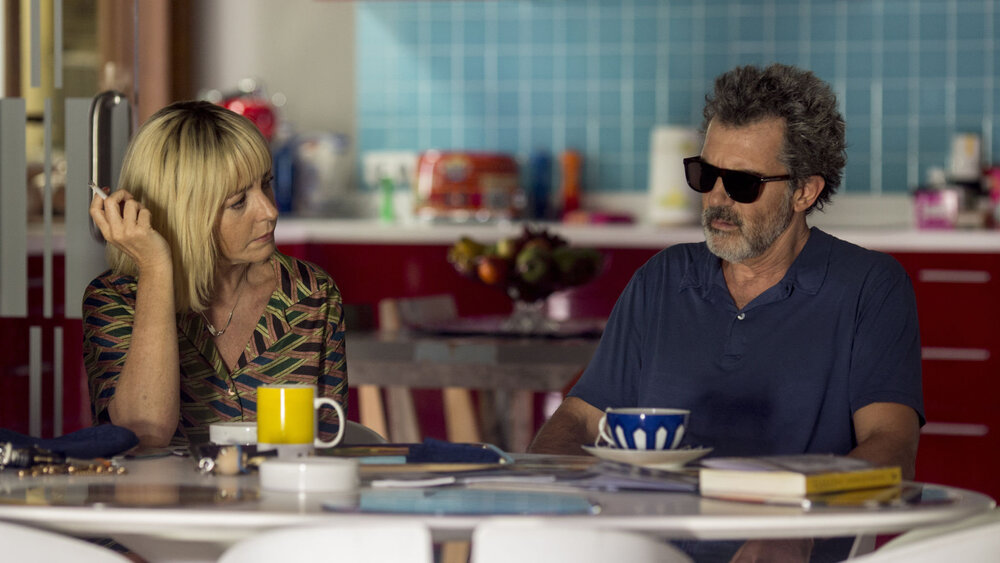

December 12, 2024

Almodovar is undoubtedly one of those directors who seem to have full control over their craft. Each scene feels incredibly intentional, and everything the movie offers is wholly and stylistically consistent. A looming tenderness encompasses every part of this film, making it a joy to watch regardless of what is happening.
The abundant use of color, beyond being pleasant to the eye, provides a warmth that a story like this greatly benefits from. I am not traditionally a fan of this type of cinematography which feels less cinematic and more vibrant, but it works really well here. On top of that, the dialogue does a great job of making the sadder parts of this story not hurt as much. All characters are upfront and direct about their personal motivations which makes everyone feel extremely honest and intimate. These choices go hand in hand in making this a rose-tinted retelling of one's life, which otherwise could have been quite a depressive memoir.
The ending is undeniably beautiful, providing such a pleasant end to this story. It is so simple, yet it provides so much weight to the finale.
-0.5 for the bathing scene tho cuz wtf was that